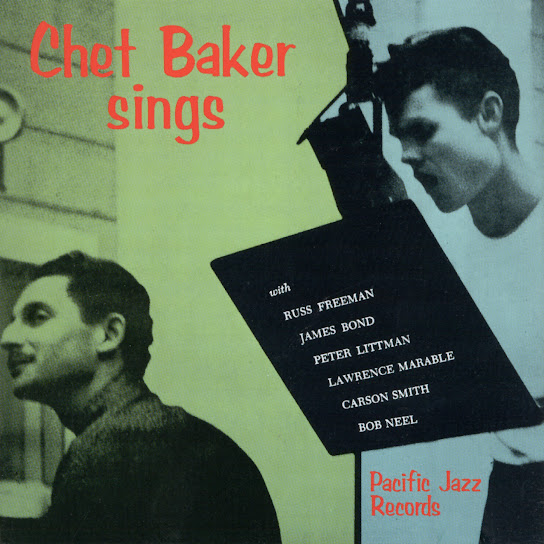

Jazz
A Love Supreme
1965 • John Coltrane
A Night in Tunisia
1942 • Dizzy Gillespie
Blue Rondo à la Turk
1959 • Dave Brubeck
Body and Soul
1930 • Coleman Hawkins
Cantaloupe Island
1964 • Herbie Hancock
God Bless the Child
1941 • Billie Holiday
Goodbye Pork Pie Hat
1959 • Charles Mingus

My Funny Valentine
1952 • Chet Baker
Sing, Sing, Sing
1936 • Benny Goodman
Take the "A" Train
1941 • Duke Ellington